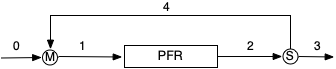

| item | value | units |
|---|---|---|
| \(\dot{n}_{A in}\) | 1.07 | mol min-1 |
| \(\dot{n}_{Z_in}\) | 1.23 | mol min-1 |
| \(T_{in}\) | 311 | K |
| \(T_r\) | 320 | K |
| \(\dot{n}_{A,prod}\) | 5.59 x 10-2 | mol min-1 |
| \(\dot{n}_{Z,prod}\) | 0.944 | mol min-1 |
| \(T_{prod}\) | 320 | K |
Appendix K — Solving Differential-Algebraic Equations
A set of differential-algebraic equations (DAEs) includes two subsets of equations. One subset contains differential equations and the other contains ATEs. Only one type of DAEs are important in Reaction Engineering Basics, and they can be solved using the same solvers as are used for ATEs and IVODEs (see Appendix I and Appendix J).
K.1 DAEs in Reaction Engineering Basics
Appendix J describes how to solve IVODEs with an unknown initial value or when an unknown constant appears in the IVODEs. In essence, an implicit ATE is written for the unknown initial value or constant. Then that implicit ATE is solved together with the IVODEs. The solution of a set of DAEs as described here uses a very similar approach.
In Reaction Engineering Basics the IVODE subset of the DAEs will always be the reactor design equations for a PFR. The ATE subset of the DAEs will be mole and energy balances on other equipment associated with the PFR. Specifically the ATEs will be mole and energy balances on a heat exchanger when analyzing a thermally back-mixed PFR or mole and energy balances on a stream mixer and a stream splitter when analyzing a recycle PFR.
K.2 Mathematical Formulation of the Solution of DAEs
After summarizing the assignment, the mathematical formulation of the solution begins with writing the PFR reactor design equations and identifying the initial values and stopping criterion that will be used when solving them. The next step is to write mole and energy balances on the heat exchanger or on the stream splitter and stream mixer. The PFR reactor design equations will be IVODEs and the other mole and energy balances will be ATEs that together make up the set of DAEs being solved.
The solution of the DAEs starts with the ATEs. The number of unknown quantities appearing in the ATEs will be greater than the number of ATEs. The unknown quantities will include initial values of the IVODE dependent variables, final values of the IVODE dependent variables, and other unknown quantities. The key to solving the DAEs is that the ATEs are solved to find the unknown IVODE initial values and the other unknown quantities. It is critically important that the ATEs are not solved to find the unknown IVODE final values.
As described in Appendix I, when an ATE solver is used to solve the ATEs numerically, it must be provided with two things. The first is an initial guess for the solution of the ATEs. The second is a residuals function. The residuals function must accept a guess for the solution as an argument. It must use that guess to calculate the values of any remaining unknown quantities appearing in the residuals expressions, evaluate the residuals, and return their values.
So, for this type of DAEs, when the residuals function receives a guess for the solution of the ATEs, that guess will include values for the IVODE initial values. Using those initial values, the IVODEs can be solved numerically to get the IVODE final values. Then, using those final values, the residuals can be evaluated and returned.
The key point is that the IVODEs are solved numerically within the residuals function, because within the residuals function the necessary initial values are available. The numerical solution of the IVODEs can be accomplished exactly as described in Appendix J.
K.3 Numerical Implementation of the Solution of DAEs
The numerical implementation of the solution entails writing code similar to that used with solving ATEs (Appendix I) and IVODEs (Appendix J). Some of the code calls the ATE and IVODE solvers, and some of the code is called by those solvers. The specifics of writing the code will depend upon the mathematics software being used and programmer preferences. Here it is assumed that the code is split into several functions, each of which performs a specific task. There are many other, equally valid ways to structure the code. The function structure used herein is described below.
- other equipment model function
- receives an initial guess for the solution of the mole and energy balances on equipment other than the reactor (i. e. the ATEs), calls an ATE solver, passing the initial guess and the name of the residuals function (below), checks that the ATE solver converged, and returns one solution of the ATEs.
- residuals function
- receives a guess for the solution of the ATEs, calls the reactor model function to solve the IVODEs using the guess, uses the results to evaluate and return the residuals corresponding to the ATEs.
- reactor model function
- receives the initial values, sets the stopping criterion, calls an IVODE solver, and returns corresponding sets of values of the independent variable and each of the dependent variables spanning the range from their initial value to their final value.
- derivatives function
- receives the values of the independent and dependent variables at the start of an integration step, uses them to evaluate the derivatives and returns their values.
- top-level code (and/or a master calculations function)
- establishes a mechanism for making quantities available to all functions, sets an initial guess for the solution of the other equipment ATEs, calls the other equipment model function to get a solution of the ATEs, and perfroms any additional calculations that are necessary.
K.4 Example Solution of a Set of DAEs for a Recycle PFR
A reaction engineer has been given an assignment that requires analyzing the use of an adiabatic, steady-state, recycle PFR like that in Figure K.1 for reaction (1). The engineer summarized the assignment as shown below.
\[ A \rightarrow Z \tag{1} \]
K.4.1 Assignment Summary
Given and Known Constants: \(D\) = 5 cm, \(\Delta H\) = -14,000 cal mol-1, \(\dot{V}_{feed}\) = 500 cm3 min-1, \(\breve{C}_p\) = 1.3 cal cm-3 K-1, \(R_R\) = 1.3, \(\dot{n}_{A,feed}\) = 1.0 mol min-1, \(\dot{n}_{Z,feed}\) = 0, \(L\) = 50 cm, \(T_{feed}\) = 300 K, \(k_0\) = 4.2 x 1015 cm3 mol-1 min-1, and \(E\) = 18,000 cal mol-1.
Reactor System: Adiabatic, steady-state, recycle PFR.
Quantities of Interest: \(\dot{n}_{A,prod}\), \(\dot{n}_{Z,prod}\), and \(T_{prod}\).

K.4.2 Mathematical Formulation of the Solution
The engineer then generated the reactor design equations, (2), (3), and (4); the initial values and stopping criterion in Table K.1; the mole and energy balances on the stream splitter, equations (5), (6), and (7); and the mole and energy balances on the stream mixer, equations (8), (9), (10), and (11).
Reactor Design Equations
\[ \frac{d\dot{n}_A}{dz} = - \frac{\pi D^2}{4}r \tag{2} \]
\[ \frac{d\dot{n}_Z}{dz} = \frac{\pi D^2}{4}r \tag{3} \]
\[ \frac{dT}{dz} = - \frac{\pi D^2}{4}\frac{r\Delta H}{\dot{V}_{in} \breve{C}_p} \tag{4} \]
Initial Values and Stopping Criterion
| Variable | Initial Value | Stopping Criterion |
|---|---|---|
| \(z\) | \(0\) | \(L\) |
| \(\dot{n}_A\) | \(\dot{n}_{A,in}\) | |
| \(\dot{n}_Z\) | \(\dot{n}_{Z,in}\) | |
| \(T\) | \(T_{in}\) |
Stream Splitter and Stream Mixer Design Equations
\[ \dot{n}_{A,feed} + \dot{n}_{A,r} - \dot{n}_{A,in} = 0 = \epsilon_1 \tag{5} \]
\[ \dot{n}_{Z,feed} + \dot{n}_{Z,r} - \dot{n}_{Z,in} = 0 = \epsilon_2 \tag{6} \]
\[ \dot{V}_{feed} \breve{C}_p \left( T_{in} - T_{feed} \right) + \dot{V}_{r} \breve{C}_p \left( T_{in} - T_{r} \right) = 0 = \epsilon_3 \tag{7} \]
\[ \dot{n}_{A,out} - \dot{n}_{A,r} - \dot{n}_{A,prod} = 0 = \epsilon_4 \tag{8} \]
\[ \dot{n}_{Z,out} - \dot{n}_{Z,r} - \dot{n}_{Z,prod} = 0 = \epsilon_5 \tag{9} \]
\[ T_{out} - T_r = 0 = \epsilon_6 \tag{10} \]
\[ T_{out} - T_{prod} = 0 = \epsilon_7 \tag{11} \]
The engineer noted that when the derivatives were evaluated at the start of each integration step, the rate would need to be calculated, and wrote the ancillary equation, (12), for doing so. He added equations (13), (14), and (15) because they are needed to calculate \(\dot{V}_{in}\) which appears in the rate expression. The engineer also noted that the flow rates of the recycle stream will be needed to evaluate the residuals. They are related to the product stream flow rates through the recycle ratio, equations (16), and (17).
Ancillary Equations for Evaluating the Derivatives
\[ r = k_0 \exp{\left( \frac{-E}{RT} \right)}\frac{\dot{n}_A\dot{n}_Z}{\dot{V}_{in}^2} \tag{12} \]
\[ \dot{V}_{feed} = \dot{V}_{prod} \tag{13} \]
\[ \dot{V}_{r} = R_R \dot{V}_{prod} \tag{14} \]
\[ \dot{V}_{in} = \dot{V}_{feed} + \dot{V}_{r} \tag{15} \]
Ancillary Equations for Evaluating the Residuals
\[ \dot{n}_{A,r} = R_R \dot{n}_{A,prod} \tag{16} \]
\[ \dot{n}_{Z,r} = R_R \dot{n}_{Z,prod} \tag{17} \]
K.4.3 Assignment
Complete the numerical formulation of the solution, and then implement it numerically.
Click Here to See What an Expert Might be Thinking at this Point
I know that when solving DAEs of this type, the IVODEs will be solved within the residuals function for the ATEs, so I’ll start by considering the solution of the ATEs. There are 7 ATEs, equations (5) through (11), but they contain 13 unknown quantities: \(\dot{n}_{A,r}\), \(\dot{n}_{A,in}\), \(\dot{n}_{Z,r}\), \(\dot{n}_{Z,in}\), \(T_{in}\), \(\dot{V}_r\), \(\dot{T}_r\), \(\dot{n}_{A,out}\), \(\dot{n}_{A,prod}\), \(\dot{n}_{Z,out}\), \(\dot{n}_{Z,prod}\), \(T_{out}\), and \(T_{prod}\). I can find 7 of the unknown quantities by solving the ATEs. The others will need to be calculated at the point where the residuals need to be evaluated.
I also know that the initial IVODE values in Table K.1 must be among the 7 variables found by solving the ATEs, and the final IVODE values cannot be among them. I will solve the ATEs for \(\dot{n}_{A,in}\), \(\dot{n}_{Z,in}\), \(T_{in}\), \(\dot{n}_{A,prod}\), \(\dot{n}_{Z,prod}\), \(T_{prod}\), and \(T_r\).
With that choice, at the point where the residuals need to be evaluated, I will have values for those 7 variables, but I’ll need to calculate the other 6 unknown quantities. Since I’ll know \(\dot{n}_{A,in}\), \(\dot{n}_{Z,in}\), and \(T_{in}\), I can solve the PFR design equations for \(\dot{n}_A\left(z\right)\), \(\dot{n}_Z\left(z\right)\), and \(T\left(z\right)\). The resulting final values are then equal to \(\dot{n}_{A,out}\), \(\dot{n}_{Z,out}\), and \(T_{out}\). Finally, I can use equations (13) through (16) to calculate \(\dot{n}_{A,r}\), \(\dot{n}_{Z,r}\), and \(\dot{V}_r\).
The ATEs, equations (5) through (11) can be solved numerically to find \(\dot{n}_{A,in}\), \(\dot{n}_{Z,in}\), \(T_{in}\), \(T_r\), \(\dot{n}_{A,prod}\), \(\dot{n}_{Z,prod}\), and \(T_{prod}\). At the point where the residuals must be evaluated, the molar flow rates and temperature at the reactor outlet can be found by solving the PFR design equations numerically for corresponding values of \(z\), \(\dot{n_A}\), \(\dot{n_Z}\), and \(T\) that span the range from \(z=0\) to \(z=L\). The outlet values are then found using equations (17), (18), and (19).
\[ \dot{n}_{A,out} = \dot{n}_A \big\vert_{z=L} \tag{18} \]
\[ \dot{n}_{Z,out} = \dot{n}_Z \big\vert_{z=L} \tag{19} \]
\[ T_{out} = T \big\vert_{z=L} \tag{20} \]
Calculations Summary:
- Substitute the given and known quantities in all equations.
- When it is necessary to evaluate the residuals
- \(\dot{n}_{A,in}\), \(\dot{n}_{Z,in}\), \(T_{in}\), \(T_r\), \(\dot{n}_{A,prod}\), \(\dot{n}_{Z,prod}\), and \(T_{prod}\) will be available
- Solve the PFR design equations, (2) through (4), numerically to get corresponding sets of values of \(z\), \(\dot{n}_A\), \(\dot{n}_Z\) and \(T\).
- calculate \(\dot{V}_{prod}\) using equation (13).
- calculate \(\dot{V}_r\) using equation (14).
- calculate \(\dot{V}_{in}\) using equation (15).
- calculate \(\dot{n}_{A,r}\), \(\dot{n}_{Z,r}\), \(\dot{n}_{A,out}\), \(\dot{n}_{Z,out}\), and \(T_{out}\) using equations (16) - (20).
- evaluate the residuals, \(\epsilon_1\) through \(\epsilon_7\) using equations (5) through (11).
- When it is necessary to evaluate the derivatives
- values of \(z\), \(\dot{n}_A\), \(\dot{n}_Z\) and \(T\) will be available.
- calculate \(\dot{V}_{prod}\) using equation (13).
- calculate \(\dot{V}_r\) using equation (14).
- calculate \(\dot{V}_{in}\) using equation (15).
- calculate \(r\) using equation (12).
- evaluate the derivatives using equations (2), (3), and (4).
K.4.4 Numerical Implementation of the Solution
- Make the given and known constants available for use in all functions,
- Write a derivatives function that
- receives values of \(z\), \(\dot{n}_{A}\), \(\dot{n}_{Z}\), and \(T\) as input,
- calculates and returns the values of the derivatives as described in step 3 of the calculations summary
- Write a reactor model function that
- receives \(\dot{n}_{A,in}\), \(\dot{n}_{Z,in}\), and \(T_{in}\) as arguments,
- gets corresponding sets of values of \(z\), \(\dot{n}_{A}\), \(\dot{n}_{Z}\), and \(T\) spanning the range from their initial values to their final values by calling an IVODE solver and passing the following information to it:
- the initial values and stopping criterion in Table K.1 and
- the name of the derivatives function from step 2 above,
- checks that the solver successfully solved the IVODEs, and
- returns the values returned by the IVODE solver.
- Write a residuals function that
- receives values of \(\dot{n}_{A,in}\), \(\dot{n}_{Z,in}\), \(T_{in}\), \(T_r\), \(\dot{n}_{A,prod}\), \(\dot{n}_{Z,prod}\), and \(T_{prod}\) as arguments
- calculates and returns the residuals as described in step 2 of the calculations summary.
- Write an other equipment model function that
- receives an initial guess (\(\dot{n}_{A,in}\), \(\dot{n}_{Z,in}\), \(T_{in}\), \(T_r\), \(\dot{n}_{A,prod}\), \(\dot{n}_{Z,prod}\), and \(T_{prod}\)) for the solution of the ATEs
- gets a solution of the ATEs by calling an ATE solver and passing the following information to it
- the initial guess and
- the name of the residuals function from step 4 above,
- checks that the solver converged, and
- returns the values returned by the ATE solver.
- Perform the analysis by
- setting an initial guess for \(\dot{n}_{A,in}\), \(\dot{n}_{Z,in}\), \(T_{in}\), \(T_r\), \(\dot{n}_{A,prod}\), \(\dot{n}_{Z,prod}\), and \(T_{prod}\),
- calling the other equipment model function from step 5 to get a solution (\(\dot{n}_{A,in}\), \(\dot{n}_{Z,in}\), \(T_{in}\), \(T_r\), \(\dot{n}_{A,prod}\), \(\dot{n}_{Z,prod}\), and \(T_{prod}\)), and
- displaying the results.
K.4.5 Results and Discussion
The calculations were performed as described above and the results are shown in Table K.2.
The numerical solution of a set of DAEs generally requires using solver that is designed for that purpose. However, DAEs are only encountered a few times in Reaction Engineering Basics, and each time they are encountered, the mathematical formulation and numerical implementation of the solution can be accomplished in the same manner as illustrated in this example.
Note
The recycle stream provides backmixing of the product stream with the feed. This is similar to what happens in a CSTR. Recall that CSTRs sometimes can have multiple steady states. The same is true of a recycle PFR. In fact, the solution presented here is not the only solution.
SCoRE Connection
Videos showing how to complete this assignment using either Matlab or Python, along with the Matlab and Python code, are available in SCoRE
K.5 Symbols Used in Appendix K
| Symbol | Meaning |
|---|---|
| \(k_0\) | Arrhenius pre-exponential factor; an additional subscript indexes the reaction. |
| \(\dot{n}\) | Molar flow rate; additional subscripts denote the reagent and identify the flow stream. |
| \(r\) | Reaction rate; additional subscripts index the reaction. |
| \(z\) | Axial distance from the inlet of a PFR. |
| \(\breve{C}_p\) | Volumetric heat capacity. |
| \(D\) | PFR diameter. |
| \(E\) | Activation energy; an additional subscript indexes the reaction. |
| \(L\) | Length of a PFR. |
| \(P\) | Pressure. |
| \(R\) | Ideal gas constant. |
| \(R_R\) | Recycle ratio. |
| \(T\) | Temperature; an additional subscript denotes the flow stream. |
| \(\dot{V}\) | Volumetric flow rate; an additional subscript denotes the flow stream. |
| \(\Delta H\) | Heat of reaction; an additional subscript indexes the reaction. |